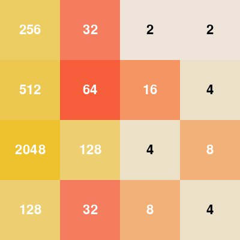

Build the learning stack.
A small neural-network framework makes every forward pass, derivative, and parameter update inspectable.
Reinforcement learning · Neural networks · Game environments
Two versions of the same reinforcement-learning idea: first implement the neural-network machinery from scratch, then use TensorFlow and Keras to train, save, and visualize an agent that reaches the 2048 tile.
Why 2048?
2048 has only four actions—left, right, up, and down—but choosing well requires more than collecting the largest immediate merge. A move rearranges the whole board, a new tile appears at random, and a locally rewarding choice can destroy the structure needed to survive many turns later.
That makes the game a compact reinforcement-learning problem. The agent must learn a policy under randomness, delayed consequences, a changing set of legal moves, and an enormous number of possible board configurations.
Two implementations
The same 2048 problem became two projects with different goals: expose the learning machinery first, then build a longer-running experiment with a standard deep-learning stack.
A small neural-network framework makes every forward pass, derivative, and parameter update inspectable.
Standard layers and automatic differentiation support longer training, saved checkpoints, and complete recorded games.
From scratch · inside the implementation
The central accomplishment was not a particular network shape. It was designing reusable layer objects, then deriving and coding the backward pass that makes those objects trainable.
The coordinator owns the traversal; each layer owns the mathematics of its operation. That boundary lets dense, convolutional, and output layers participate in one training lifecycle.
build_network(shape)→forward(x)→backward(error)→calculate_deltas()→update_weights()
The difficult part was translating the chain rule into tensor operations for three different cases: dense weights, spatial kernels, and the policy or value output.
An outer product forms every weight gradient; WTδ carries the error to the preceding layer.
Input–error correlation recovers each kernel gradient; full convolution reconstructs the error for earlier feature maps.
The value loss starts with −At; the policy loss starts with −At/π(at|st) and passes through the softmax Jacobian.
DenseLayer.calculate_deltas()
ConvPoolLayer.calculate_deltas()
softmax: diag(p) − ppT
Network.backward(error)
Keras implementation
Standard Keras layers make the model compact enough to read as a diagram. One game transition then supplies the feedback that updates the policy and value estimates.
Library implementation · evaluation
A policy from the Keras project was saved, reloaded into a Pygame visualizer, and allowed to play complete games. The recording below follows one such run through the creation of the 2048 tile.
